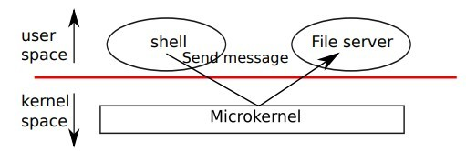

Some features were added, which should save time for people across the board
- scroll-to function identifiers, globals, line numbers
- inline figure references
- inline assembly docs
- text-to-speech with good keyboard control
CHAPTER 0
Operating System Interfaces
The job of an operating system is to share a computer among multiple programs and to provide a more useful set of services than the hardware alone supports. The operating system manages and abstracts the low-level hardware, so that, for example, a word processor need not concern itself with which type of disk hardware is being used. It also shares the hardware among multiple programs so that they run (or appear to run) at the same time. Finally, operating systems provide controlled ways for programs to interact, so that they can share data or work together.
An operating system provides services to user programs through an interface. Designing a good interface turns out to be difficult. On the one hand, we would like the interface to be simple and narrow because that makes it easier to get the implementation right. On the other hand, we may be tempted to offer many sophisticated features to applications. The trick in resolving this tension is to design interfaces that rely on a few mechanisms that can be combined to provide much generality.
This book uses a single operating system as a concrete example to illustrate operating system concepts. That operating system, xv6, provides the basic interfaces introduced by Ken Thompson and Dennis Ritchie’s Unix operating system, as well as mimicking Unix’s internal design. Unix provides a narrow interface whose mechanisms combine well, offering a surprising degree of generality. This interface has been so successful that modern operating systems—BSD, Linux, Mac OS X, Solaris, and even, to a lesser extent, Microsoft Windows—have Unix-like interfaces. Understanding xv6 is a good start toward understanding any of these systems and many others.
As shown in Figure 0-1, xv6 takes the traditional form of a kernel, a special program that provides services to running programs. Each running program, called a process, has memory containing instructions, data, and a stack. The instructions implement the program’s computation. The data are the variables on which the computation acts. The stack organizes the program’s procedure calls.
When a process needs to invoke a kernel service, it invokes a procedure call in the operating system interface. Such a procedure is called a system call. The system call enters the kernel; the kernel performs the service and returns. Thus a process alternates between executing in user space and kernel space.
The kernel uses the CPU’s hardware protection mechanisms to ensure that each process executing in user space can access only its own memory. The kernel executes with the hardware privileges required to implement these protections; user programs execute without those privileges. When a user program invokes a system call, the hardware raises the privilege level and starts executing a pre-arranged function in the kernel.
The collection of system calls that a kernel provides is the interface that user programs see. The xv6 kernel provides a subset of the services and system calls that Unix kernels traditionally offer. Figure 0-2 lists all of xv6’s system calls.
The rest of this chapter outlines xv6’s
services—processes, memory, file descriptors, pipes, and
file system—and illustrates them with code snippets and
discussions of how the shell, which is the primary user
interface to traditional Unix-like systems, uses them. The
shell’s use of system calls illustrates how carefully they
have been designed. The shell is an ordinary program that
reads commands from the user and executes them. The fact
that the shell is a user program, not part of the kernel,
illustrates the power of the system call interface: there
is nothing special about the shell. It also means that the
shell is easy to replace; as a result, modern Unix systems
have a variety of shells to choose from, each with its own
user interface and scripting features. The xv6 shell is a
simple implementation of the essence of the Unix Bourne
shell. Its implementation can be found at line (8550).
§ Processes and memory
An xv6 process consists of user-space memory (instructions, data, and stack) and per-process state private to the kernel. Xv6 can time-share processes: it transparently switches the available CPUs among the set of processes waiting to execute. When a process is not executing, xv6 saves its CPU registers, restoring them when it next runs the process. The kernel associates a process identifier, or pid, with each process.
A process may create a new process using the fork system
call. Fork creates a new process, called the child process,
with exactly the same memory contents as the calling
process, called the parent process. Fork returns in both the
parent and the child. In the parent, fork returns the
child’s pid; in the child, it returns zero. For example,
consider the following program fragment:
int pid = fork();
if (pid > 0) {
printf("parent: child=%d\n", pid);
pid = wait();
printf("child %d is done\n", pid);
} else if (pid == 0) {
printf("child: exiting\n");
exit();
} else {
printf("fork error\n");
}
The exit system call causes the calling process to stop
executing and to release resources such as memory and open
files. The wait system call returns the pid of an exited
child of the current process; if none of the caller's
children has exited, wait waits for one to do so. In the
example, the output lines
parent: child=1234
child: exiting
might come out in either order, depending on whether the parent or child gets to its printf call first. After the child exits the parent’s wait returns, causing the parent to print
parent: child 1234 is done
| System call | Description |
fork | Create a process |
exit() | Terminate the current process |
wait() | Wait for a child process to exit |
kill(pid) | Terminate process pid |
getpid() | Return the current process’s pid |
sleep(n) | Sleep for n clock ticks |
exec(filename, *argv) | Load a file and execute it |
sbrk(n) | Grow process’s memory by n bytes |
open(filename, flags) | Open a file; the flags indicate read/write |
read(fd, buf, n) | Read n bytes from an open file into buf |
write(fd, buf, n) | Write n bytes to an open file |
close(fd) | Release open file fd |
dup(fd) | Duplicate fd |
pipe(p) | Create a pipe and return fd’s in p |
chdir(dirname) | Change the current directory |
mkdir(dirname) | Create a new directory |
mknod(name, major, minor) | Create a device file |
fstat(fd) | Return info about an open file |
link(f1, f2) | Create another name (f2) for the file f1 |
unlink(filename) | Remove a file |
Although the child has the same memory contents as the
parent initially, the parent and child are executing with
different memory and different registers: changing a
variable in one does not affect the other. For example,
when the return value of wait is stored into pid in the
parent process, it doesn’t change the variable pid in the
child. The value of pid in the child will still be zero.
The exec system call replaces the calling process’s memory
with a new memory image loaded from a file stored in the
file system. The file must have a particular format, which
specifies which part of the file holds instructions, which
part is data, at which instruction to start, etc. xv6 uses
the ELF format, which Chapter 2 discusses in more
detail. When exec succeeds, it does not return to the
calling program; instead, the instructions loaded from the
file start executing at the entry point declared in the
ELF header. exec takes two arguments: the name of the file
containing the executable and an array of string
arguments. For example:
char *argv[3];
argv[0] = "echo";
argv[1] = "hello";
argv[2] = 0;
exec("/bin/echo", argv);
printf("exec error\n");
This fragment replaces the calling program with an instance of the program /bin/echo running with the argument list echo hello. Most programs ignore the first argument, which is conventionally the name of the program.
The xv6 shell uses the above calls to run programs on behalf of
users. The main structure of the shell is simple; see main
(8701). The main loop reads a line of input from the user
with getcmd. Then it calls fork , which
creates a copy of the shell process. The parent calls wait, while
the child runs the command. For example, if the user had typed
‘‘echo hello’’ to the shell, runcmd would have been called with
‘‘echo hello’’ as the argument. runcmd runs the
actual command. For ‘‘echo hello’’, it would call
exec. If exec succeeds then the child will execute
instructions from echo instead of runcmd. At some
point echo will call exit, which will cause the
parent to return from wait in main. You might
wonder why fork and exec are not combined in a single call; we
will see later that separate calls for creating a process and
loading a program is a clever design.
Xv6 allocates most user-space memory implicitly: fork
allocates the memory required for the child’s copy of the parent’s
memory, and exec allocates enough memory to hold the executable
file. A process that needs more memory at run-time (perhaps for
malloc) can call sbrk(n) to grow its data memory by n bytes; sbrk
returns the location of the new memory.
Xv6 does not provide a notion of users or of protecting one user from another; in Unix terms, all xv6 processes run as root
I/O and File descriptors
A file descriptor is a small integer representing a kernel-managed object that a process may read from or write to. A process may obtain a file descriptor by opening a file, directory, or device, or by creating a pipe, or by duplicating an existing descriptor. For simplicity we’ll often refer to the object a file descriptor refers to as a ‘‘file’’; the file descriptor interface abstracts away the differences between files, pipes, and devices, making them all look like streams of bytes.
Internally, the xv6 kernel uses the file descriptor as an
index into a per-process table, so that every process has a private
space of file descriptors starting at zero. By convention, a process
reads from file descriptor 0 (standard input), writes output to file
descriptor 1 (standard output), and writes error messages to file
descriptor 2 (standard error). As we will see, the shell exploits the
convention to implement I/O redirection and pipelines. The shell
ensures that it always has three file descriptors open(8707), which
are by default file descriptors for the console.
The read and write system calls read bytes from and write
bytes to open files named by file descriptors. The
call read(fd, buf, n) reads at most n bytes
from the file descriptor fd, copies them into buf, and
returns the number of bytes read. Each file descriptor
that refers to a file has an offset associated with
it. Read reads data from the current file offset and then
advances that offset by the number of bytes read: a
subsequent read will return the bytes following the ones
returned by the first read. When there are no more bytes
to read, read returns zero to signal the end of the file.
The call write(fd, buf, n) writes n bytes from buf to
the file descriptor fd and returns the number of bytes
written. Fewer than n bytes are written only when an error
occurs. Like read, write writes data at the current file offset
and then advances that offset by the number of bytes written: each
write picks up where the previous one left off.
The following program fragment (which forms the essence of cat) copies data from its standard input to its standard output. If an error occurs, it writes a message to the standard error.
char buf[512];
int n;
for (;;) {
n = read(0, buf, sizeof buf);
if (n == 0)
break;
if (n < 0) {
fprintf(2, "read error\n");
exit();
}
if (write(1, buf, n) != n) {
fprintf(2, "write error\n");
exit();
}
}
The important thing to note in the code fragment is that cat doesn’t know whether it is reading from a file, console, or a pipe. Similarly cat doesn’t know whether it is printing to a console, a file, or whatever. The use of file descriptors and the convention that file descriptor 0 is input and file descriptor 1 is output allows a simple implementation of cat.
The close system call releases a file descriptor, making it free for reuse by a future open, pipe, or dup system call (see below). A newly allocated file descriptor is always the lowest-numbered unused descriptor of the current process.
File descriptors and fork interact to make I/O redirection easy to implement. Fork copies the parent’s file descriptor table along with its memory, so that the child starts with exactly the same open files as the parent. The system call exec replaces the calling process’s memory but preserves its file table. This behavior allows the shell to implement I/O redirection by forking, reopening chosen file descriptors, and then execing the new program. Here is a simplified version of the code a shell runs for the command cat < input.txt:
char *argv[2];
argv[0] = "cat";
argv[1] = 0;
if (fork() == 0) {
close(0);
open("input.txt", O_RDONLY);
exec("cat", argv);
}
After the child closes file descriptor 0, open
is guaranteed to use that file descriptor for
the newly opened input.txt: 0
will be the smallest available file
descriptor. Cat then executes with file
descriptor 0 (standard input) referring to input.txt.
The code for I/O redirection in the xv6 shell works in exactly
this way (8630). Recall that at this point in the code the
shell has already forked the child shell and that runcmd will call
exec to load the new program. Now it should be clear why it is a
good idea that fork and exec are separate calls. Because if they
are separate, the shell can fork a child, use open, close, dup in
the child to change the standard input and output file
descriptors, and then exec. No changes to the program being
exec-ed (cat in our example) are required. If fork and exec were
combined into a single system call, some other (probably more
complex) scheme would be required for the shell to redirect
standard input and output, or the program itself would have to
understand how to redirect I/O.
Although fork copies the file descriptor table,
each underlying file offset is shared between parent and
child. Consider this example:
if (fork() == 0) {
write(1, "hello ", 6);
exit();
} else {
wait();
write(1, "world\n", 6);
}
At the end of this fragment, the file attached to file descriptor 1 will contain the data hello world. The write in the parent (which, thanks to wait, runs only after the child is done) picks up where the child’s write left off. This behavior helps produce sequential output from sequences of shell commands, like
$ (echo hello; echo world) > output.txt
The dup system call duplicates an existing file
descriptor, returning a new one that refers to the same underlying
I/O object. Both file descriptors share an offset, just as the
file descriptors duplicated by fork do. This is
another way to write hello world into a file:
fd = dup(1);
write(1, "hello ", 6);
write(fd, "world\n", 6);
Two file descriptors share an offset if they were derived from the
same original file descriptor by a sequence of fork
and dup calls. Otherwise file descriptors do not
share offsets, even if they resulted from open calls for the same
file. Dup allows shells to implement commands like this:
$ ls existing-file non-existing-file > tmp1 2> &1
The 2> &1 tells the shell to give
the command a file descriptor 2 that is a duplicate of
descriptor 1. Both the name of the existing file and the error
message for the non-existing file will show up in the
file tmp1. The xv6 shell doesn’t support I/O
redirection for the error file descriptor, but now you know how
to implement it.
File descriptors are a powerful abstraction, because they hide the details of what they are connected to: a process writing to file descriptor 1 may be writing to a file, to a device like the console, or to a pipe.
§ Pipes
A pipe(6551) is a small kernel buffer exposed to processes
as a pair of file descriptors, one for reading and one for
writing. Writing data to one end of the pipe makes that data
available for reading from the other end of the pipe. Pipes
provide a way for processes to communicate.
The following example code runs the program wc with standard input connected to the read end of a pipe.
int p[2];
char *argv[2];
argv[0] = "wc";
argv[1] = 0;
pipe(p);
if (fork() == 0) {
close(0);
dup(p[0]);
close(p[0]);
close(p[1]);
exec("/bin/wc", argv);
} else {
close(p[0]);
write(p[1], "hello world\n", 12);
close(p[1]);
}
The program calls pipe, which creates a new pipe and records the
read and write file descriptors in the array p. After
fork, both parent and child have file descriptors
referring to the pipe. The child dups the read end onto file
descriptor 0, closes the file descriptors in p, and execs wc. When
wc reads from its standard input, it reads from the pipe. The
parent closes the read side of the pipe, writes to the pipe, and
then closes the write side.
If no data is available, a on a pipe waits for either data to be written or all file descriptors referring to the write end to be closed; in the latter case, will return 0, just as if the end of a data file had been reached. The fact that blocks until it is impossible for new data to arrive is one reason that it's important for the child to close the write end of the pipe before executing above: if one of file descriptors referred to the write end of the pipe, would never see end-of-file.
The xv6 shell implements pipelines such as
$ fork sh.c | wc -l
in a manner similar to the above code (8650). The child
process creates a pipe to connect the left end of the pipeline
with the right end. Then it calls and for the left end of the
pipeline and and for the right end, and waits for both to
finish. The right end of the pipeline may be a command that itself
includes a pipe (e.g., which itself forks two new child processes
(one for and one for Thus, the shell may create a tree of
processes. The leaves of this tree are commands and the interior
nodes are processes that wait until the left and right children
complete. In principle, you could have the interior nodes run the
left end of a pipeline, but doing so correctly would complicate
the implementation.
Pipes may seem no more powerful than temporary files: the pipeline
$ echo hello world | wc
could be implemented without pipes as
$ echo hello world > /tmp/xyz; wc < /tmp/xyz
Pipes have at least four advantages over temporary files in this
situation. First, pipes automatically clean themselves up; with
the file redirection, a shell would have to be careful to
remove /tmp/xyz when done. Second, pipes can pass
arbitrarily long streams of data, while file redirection requires
enough free space on disk to store all the data. Third, pipes
allow for parallel execution of pipeline stages, while the file
approach requires the first program to finish before the second
starts. Fourth, if you are implementing inter-process
communication, pipes' blocking reads and writes are more efficient
than the non-blocking semantics of files.
§ File System
The xv6 file system provides data files, which are
uninterpreted byte arrays, and directories, which
contain named references to data files and other
directories. The directories form a tree, starting
at a special directory called the root. A path
like /a/b/c refers to the file or
directory named c inside the
directory named b inside the
directory named a in the root
directory
/. Paths that don’t begin with /
are evaluated relative to the calling process's
current directory, which can be changed with the
chdir system call. Both these code fragments open
the same file (assuming all the directories
involved exist):
chdir("/a");
chdir("b");
open("c", O_RDONLY);
open("/a/b/c", O_RDONLY);
The first fragment changes the process’s current directory to /a/b; the second neither refers to nor changes the process’s current directory.
There are multiple system calls to create a new file or directory:
mkdir creates a new directory, open with
the O_CREATE flag creates a new data file,
and mknod creates a new
device file. This example illustrates all three:
mkdir("/dir");
fd = open("/dir/file", O_CREATE | O_WRONLY);
close(fd);
mknod("/console", 1, 1);
Mknod creates a file in the file system, but the file has no contents. Instead, the file’s metadata marks it as a device file and records the major and minor device numbers (the two arguments to mknod), which uniquely identify a kernel device. When a process later opens the file, the kernel diverts read and write system calls to the kernel device implementation instead of passing them to the file system. fstat retrieves information about the object a file descriptor refers to. It fills in a struct stat, defined in stat.h as:
#define T_DIR 1 // Directory
#define T_FILE 2 // File
#define T_DEV 3 // Device
struct stat {
short type; // Type of file
int dev; // File system’s disk device
uint ino; // Inode
number short nlink; // Number of links to file
uint size; // Size of file in bytes
};
A file's name is distinct from the file
itself; the same underlying file, called an
inode , can have multiple names,
called
.italic-index links .
The
link
system call creates another file system name
referring to the same inode as an existing file.
This fragment creates a new file named both
a
and
b .
open("a", O_CREATE | O_WRONLY);
link("a", "b");
Reading from or writing to
a is the same as reading from or
writing to b. Each inode is
identified by a unique inode number. After
the code sequence above, it is possible to determine
that a and b refer to the
same underlying contents by inspecting the result of
fstat: both will return the same inode number
(ino), and the nlink count
will be set to 2.
The unlink system call removes a name
from the file system. The file's inode and the disk
space holding its content are only freed when the
file's link count is zero and no file descriptors
refer to it. Thus adding
unlink("a");
to the last code sequence leaves the inode and
file content accessible as b .
Furthermore,
fd = open("/tmp/xyz", O_CREATE | O_RDWR);
unlink("/tmp/xyz");
is an idiomatic way to create a temporary inode
that will be cleaned up when the process closes
fd
or exits.
Shell commands for file system operations are
implemented as user-level programs such as
mkdir, ln, rm,
etc. This design allows anyone to extend the shell
with new user commands by just adding a new
user-level program. In hindsight this plan seems
obvious, but other systems designed at the time of
Unix often built such commands into the shell (and
built the shell into the kernel).
One exception is cd, which is built into the shell (8716) cd must change the current working
directory of the shell itself. If cd were run as a
regular command, then the shell would fork a child process, the
child process would run cd, and cd would
change the child's working directory. The parent's (i.e., the
shell's) working directory would not change.
§ Real world
Unix's combination of the "standard" file descriptors, pipes, and convenient shell syntax for operations on them was a major advance in writing general-purpose reusable programs. The idea sparked a whole culture of "software tools" that was responsible for much of Unix's power and popularity, and the shell was the first so-called "scripting language." The Unix system call interface persists today in systems like BSD, Linux, and Mac OS X.
The Unix system call interface has been standardized through the
Portable Operating System Interface (POSIX) standard. Xv6
is not POSIX compliant. It misses system calls (including
basic ones such as lseek), it implements systems calls
only partially, etc. Our main goals for xv6 are simplicity and
clarity while providing a simple UNIX-like system-call interface.
Several people have extended xv6 with a few more basic system calls
and a simple C library so that they can run basic Unix programs.
Modern kernels, however, provide many more system calls, and many
more kinds of kernel services, than xv6. For example, they support
networking, windowing systems, user-level threads, drivers for many
devices, and so on. Modern kernels evolve continuously and rapidly,
and offer many features beyond POSIX.
For the most part, modern Unix-derived operating
systems have not followed the early Unix model of
exposing devices as special files, like the
console device file discussed above.
The authors of Unix went on to build Plan 9, which
applied the "resources are files" concept to modern
facilities, representing networks, graphics, and
other resources as files or file trees.
The file system abstraction has been a powerful idea. Even so, there are other models for operating system interfaces. Multics, a predecessor of Unix, abstracted file storage in a way that made it look like memory, producing a very different flavor of interface. The complexity of the Multics design had a direct influence on the designers of Unix, who tried to build something simpler.
This book examines how xv6 implements its Unix-like interface, but the ideas and concepts apply to more than just Unix. Any operating system must multiplex processes onto the underlying hardware, isolate processes from each other, and provide mechanisms for controlled inter-process communication. After studying xv6, you should be able to look at other, more complex operating systems and see the concepts underlying xv6 in those systems as well.
CHAPTER 1
Operating System Organization
A key requirement for an operating system is to support several
activities at once. For example, using the system call interface
described in chapter 0 a process can start new processes with
fork The operating system must time-share
the resources of the computer among these processes. For example,
even if there are more processes than there are hardware
processors, the operating system must ensure that all of the
processes make progress. The operating system must also arrange
for isolation between the processes. That is, if one
process has a bug and fails, it shouldn't affect processes that
don't depend on the failed process. Complete isolation, however,
is too strong, since it should be possible for processes to
interact; pipelines are an example. Thus an operating system must
fulfill three requirements: multiplexing, isolation, and
interaction.
This chapter provides an overview of how operating systems are
organized to achieve these 3 requirements. It turns out there are
many ways to do so, but this text focuses on mainstream designs
centered around a monolithic kernel, which is used by many
Unix operating systems. This chapter introduces xv6's design by
tracing the creation of the first process when xv6 starts running.
In doing so, the text provides a glimpse of the implementation of
all major abstractions that xv6 provides, how they interact, and
how the three requirements of multiplexing, isolation, and
interaction are met. Most of xv6 avoids special-casing the first
process, and instead reuses that xv6 must provide for
standard operation. Subsequent chapters will explore each
abstraction in more detail.
Xv6 runs on Intel 80386 or later ("x86") processors on a PC platform, and much of its low-level functionality (for example, its process implementation) is x86-specific. This book assumes the reader has done a bit of machine-level programming on some architecture, and will introduce x86-specific ideas as they come up. Appendix A briefly outlines the PC platform.
§ Abstracting physical resources
The first question one might ask when encountering an operating system is why have it at all? That is, one could implement the system calls in .figref unix:api as a library, with which applications link. In this plan, each application could even have its own library tailored to its needs. Applications could directly interact with hardware resources and use those resources in the best way for the application (e.g., to achieve high or predictable performance). Some operating systems for embedded devices or real-time systems are organized in this way.
The downside of this library approach is that, if there is more than one application running, the applications must be well-behaved. For example, each application must periodically give up the processor so that other applications can run. Such a cooperative time-sharing scheme may be OK if all applications trust each other and have no bugs. It's more typical for applications to not trust each other, and to have bugs, so one often wants stronger isolation than a cooperative scheme provides.
To achieve strong isolation it's helpful to forbid applications from
directly accessing sensitive hardware resources, and instead to abstract the
resources into services. For example, applications interact with a file system
only through open, read, write, and close
system calls, instead of read and writing raw disk sectors.
This provides the application with the convenience of pathnames, and it allows
the operating system (as the implementor of the interface) to manage the disk.
Similarly, Unix transparently switches hardware processors among processes, saving and restoring register state as necessary, so that applications don't have to be aware of time sharing. This transparency allows the operating system to share processors even if some applications are in infinite loops.
As another example, Unix processes use exec to build up their memory image,
instead of directly interacting with physical memory.
This allows the operating system to decide where to place a process in
memory; if memory is tight, the operating system might even store some of
a process's data on disk. Exec also provides
users with the convenience of a file system to store executable program images.
Many forms of interaction among Unix processes occur via file descriptors. Not only do file descriptors abstract away many details (e.g. where data in a pipe or file is stored), they also are defined in a way that simplifies interaction. For example, if one application in a pipeline fails, the kernel generates end-of-file for the next process in the pipeline.
As you can see, the system call interface in .figref unix:api is carefully designed to provide both programmer convenience and the possibility of strong isolation. The Unix interface is not the only way to abstract resources, but it has proven to be a very good one.
§ User mode, kernel mode, and system calls
Strong isolation requires a hard boundary between applications and the operating system. If the application makes a mistake, we don't want the operating system to fail or other applications to fail. Instead, the operating system should be able to clean up the failed application and continue running other applications. To achieve strong isolation, the operating system must arrange that applications cannot modify (or even read) the operating system's data structures and instructions and that applications cannot access other process's memory.
Processors provide hardware support for strong isolation. For example, the x86 processor, like many other processors, has two modes in which the processor can execute instructions: kernel mode and user mode. In kernel mode the processor is allowed to execute privileged instructions. For example, reading and writing the disk (or any other I/O device) involves privileged instructions. If an application in user mode attempts to execute a privileged instruction, then the processor doesn't execute the instruction, but switches to kernel mode so that the software in kernel mode can clean up the application, because it did something it shouldn't be doing. .figref unix:os Figure 0-1 in in Chapter 0 illustrates this organization. An application can execute only user-mode instructions (e.g., adding numbers, etc.) and is said to be running in "user space", while the software in kernel mode can also execute privileged instructions and is said to be running in "kernel space". The software running in kernel space (or in kernel mode) is called the "kernel".
An application that wants to read or write a file on disk must
transition to the kernel to do so, because the application itself
can not execute I/O instructions. Processors provide a special
instruction that switches the processor from user mode to kernel
mode and enters the kernel at an entry point specified by the
kernel. (The x86 processor provides the int
instruction for this purpose.) Once the processor has switched to
kernel mode, the kernel can then validate the arguments of the
system call, decide whether the application is allowed to perform
the requested operation, and then deny it or execute it. It is
important that the kernel sets the entry point for transitions to
kernel mode; if the application could decide the kernel entry
point, a malicious application could enter the kernel at a point
where the validation of arguments etc. is skipped.
§ Kernel organization
A key design question is what part of the operating system should run in kernel mode. One possibility is that the entire operating system resides in the kernel, so that the implementations of all system calls run in kernel mode. This organization is called a monolithic kernel.
In this organization the entire operating system runs with full hardware privilege. This organization is convenient because the OS designer doesn't have to decide which part of the operating system doesn't need full hardware privilege. Furthermore, it easy for different parts of the operating system to cooperate. For example, an operating system might have a buffer cache that can be shared both by the file system and the virtual memory system.
A downside of the monolithic organization is that the interfaces between different parts of the operating system are often complex (as we will see in the rest of this text), and therefore it is easy for an operating system developer to make a mistake. In a monolithic kernel, a mistake is fatal, because an error in kernel mode will often result in the kernel to fail. If the kernel fails, the computer stops working, and thus all applications fail too. The computer must reboot to start again.
To reduce the risk of mistakes in the kernel, OS designers can minimize the amount of operating system code that runs in kernel mode, and execute the bulk of the operating system in user mode. This kernel organization is called a microkernel.

Figure 1-1 illustrates this microkernel design. In the figure, the file system runs as a user-level process. OS services running as processes are called servers. To allow applications to interact with the file server, the kernel provides an inter-process communication mechanism to send messages from one user-mode process to another. For example, if an application like the shell wants to read or write a file, it sends a message to the file server and waits for a response.
In a microkernel, the kernel interface consists of a few low-level functions for starting applications, sending messages, accessing device hardware, etc. This organization allows the kernel to be relatively simple, as most of the operating system resides in user-level servers.
Xv6 is implemented as a monolithic kernel, following most Unix operating systems. Thus, in xv6, the kernel interface corresponds to the operating system interface, and the kernel implements the complete operating system. Since xv6 doesn't provide many services, its kernel is smaller than some microkernels.
§ Process overview
The unit of isolation in xv6 (as in other Unix operating systems) is a "process". The process abstraction prevents one process from wrecking or spying on another process's memory, CPU, file descriptors, etc. It also prevents a process from wrecking the kernel itself, so that a process can't subvert the kernel's isolation mechanisms. The kernel must implement the process abstraction with care because a buggy or malicious application may trick the kernel or hardware in doing something bad (e.g., circumventing enforced isolation). The mechanisms used by the kernel to implement processes include the user/kernel mode flag, address spaces, and time-slicing of threads.
To help enforce isolation, the process abstraction provides the illusion to a program that it has its own private machine. A process provides a program with what appears to be a private memory system, or "address space", which other processes cannot read or write. A process also provides the program with what appears to be its own CPU to execute the program's instructions.
Xv6 uses page tables (which are implemented by hardware) to give each process its own address space. The x86 page table translates (or "maps") a "virtual address"(the address that an x86 instruction manipulates) to a "physical address" (an address that the processor chip sends to main memory).

Xv6 maintains a separate page table for each process that defines that process's address space. As illustrated in .figref as , an address space includes the process's "user memory" starting at virtual address zero. Instructions come first, followed by global variables, then the stack, and finally a "heap" area (for malloc) that the process can expand as needed.
Each process's address space maps the kernel's instructions and
data as well as the user program's memory. When a process invokes
a system call, the system call executes in the kernel mappings of
the process's address space. This arrangement exists so that the
kernel's system call code can directly refer to user memory. In
order to leave plenty of room for user memory, xv6's address
spaces map the kernel at high addresses, starting at
0x80100000 .
The xv6 kernel maintains many pieces of state for each process,
which it gathers into a struct proc. A
process's most important pieces of kernel state are its page
table, its kernel stack, and its run state. We'll use the
notation p->xxx to refer to elements of the
proc structure.
Each process has a thread of execution (or thread for
short) that executes the process's instructions. A thread can be
suspended and later resumed. To switch transparently between
processes, the kernel suspends the currently running thread and
resumes another process's thread. Much of the state of a thread
(local variables, function call return addresses) is stored on the
thread's stacks. Each process has two stacks: a user stack and a
kernel stack (p->kstack). When the process is
executing user instructions, only its user stack is in use, and
its kernel stack is empty. When the process enters the kernel (for
a system call or interrupt), the kernel code executes on the
process's kernel stack; while a process is in the kernel, its user
stack still contains saved data, but isn't actively used. A
process's thread alternates between actively using its user stack
and its kernel stack. The kernel stack is separate (and protected
from user code) so that the kernel can execute even if a process
has wrecked its user stack.
When a process makes a system call, the processor switches to the kernel stack, raises the hardware privilege level, and starts executing the kernel instructions that implement the system call. When the system call completes, the kernel returns to user space: the hardware lowers its privilege level, switches back to the user stack, and resumes executing user instructions just after the system call instruction. A process's thread can "block" in the kernel to wait for I/O, and resume where it left off when the I/O has finished.
p->state indicates whether the process is allocated, ready
to run, running, waiting for I/O, or exiting.
p->pgdir holds the process's page table, in the
format that the x86 hardware expects. xv6 causes the paging
hardware to use a process's memory p->pgdir when
executing that process. A process's page table also serves as the
record of the addresses of the physical pages allocated to store
the process's memory.
§ Code: the first address space
To make the xv6 organization more concrete, we'll look how the kernel creates the first address space (for itself), how the kernel creates and starts the first process, and how that process performs the first system call. By tracing these operations we see in detail how xv6 provides strong isolation for processes. The first step in providing strong isolation is setting up the kernel to run in its own address space.
When a PC powers on, it initializes itself and then loads a
boot loader from disk into memory and executes it. Appendix B
explains the details. Xv6's boot loader loads the xv6
kernel from disk and executes it starting at entry.
The x86 paging hardware is not enabled when the kernel starts;
virtual addresses map directly to physical addresses.
The boot loader loads the xv6 kernel into memory at physical address
0x100000.
The reason it doesn't load the kernel at
0x80100000 ,
where the kernel expects to find its instructions and data,
is that there may not be any physical memory at such
a high address on a small machine.
The reason it places the kernel at
0x100000
rather than
0x0
is because the address range
0xa0000:0x100000
contains I/O devices.
.figure astmp
To allow the rest of the kernel to run,
entry
sets up a page table that maps virtual addresses starting at
0x80000000
(called KERNBASE)
to physical addresses starting at
0x0
(see .figref as ).
Setting up two ranges of virtual addresses that map to the same physical memory
range is a common use of page tables, and we will see more examples like this
one.
The entry page table is defined in main.c
.line 'main.c:/^pde_t.entrypgdir.*=/' .
We look at the details of page tables in Chapter 2,
but the short story is that entry 0 maps virtual addresses
0:0x400000 to physical
addresses 0:0x400000. This mapping is required as
long as entry is executing at low addresses, but
will eventually be removed.
Entry 512 maps virtual
addresses KERNBASE:KERNBASE+0x400000 to physical
addresses 0:0x400000. This entry will be used by the
kernel entry has finished; it maps the high
virtual addresses at which the kernel expects to find its
instructions and data to the low physical addresses where the boot
loader loaded them. This mapping restricts the kernel instructions
and data to 4 Mbytes.
Returning to
entry it loads the physical address of
entrypgdir into control register %cr3. The
value in %cr3 must be a physical address. It wouldn't
make sense for %cr3 to hold the virtual address of
entrypgdir, because the paging hardware doesn't know
how to translate virtual addresses yet; it doesn't have a page
table yet. The symbol entrypgdir, refers to an
address in high memory, and the macro V2P_WO
subtracts KERNBASE in order to find the physical
address. To enable the paging hardware, xv6 sets the flag
CR0_PG in the control register %cr0
The processor is still executing instructions at low addresses
after paging is enabled, which works since entrypgdir
maps low addresses. If xv6 had omitted entry 0
from entrypgdir, the computer would have crashed when
trying to execute the instruction after the one that enabled
paging.
Now entry needs to transfer to the kernel's C
code, and run it in high memory. First it makes the stack
pointer, %esp, point to memory to be used as a stack
(1058). All symbols have high addresses,
including stack, so the stack will still be valid
even when the low mappings are removed. Finally
entry jumps to main which is also a
high address. The indirect jump is needed because the assembler
would otherwise generate a PC-relative direct jump, which would
execute the low-memory version
of main. Main cannot return, since the
there's no return PC on the stack. Now the kernel is running in
high addresses in the function main.
§ Code: creating the first process
Now we'll look at how the kernel creates user-level processes and ensures that they are strongly isolated.
After
main
initializes several devices and subsystems,
it creates the first process by calling
userinit,
Userinit's
first action is to call
allocproc,
The job of
is to allocate a slot
struct proc
in the process table and
to initialize the parts of the process's state
required for its kernel thread to execute.
allocproc is called for each new process, while
userinit
is called only for the very first process.
allocproc
scans the
proc
table for a slot with state
UNUSED
When it finds an unused slot,
allocproc
sets the state to
EMBRYO
to mark it as used and
gives the process a unique
pid,
Next, it tries to allocate a kernel stack for the
process's kernel thread. If the memory allocation fails,
allocproc
changes the state back to
UNUSED
and returns zero to signal failure.

Now allocproc must set up the new process's kernel stack.
allocproc
is written so that it can be used by
fork
as well
as when creating the first process.
allocproc sets up the new process with a
specially prepared kernel stack and set of kernel
registers that cause it to "return" to user space when
it first runs. The layout of the prepared kernel stack
will be as shown in figure 1-4. allocproc
does part of this work by setting up return program
counter values that will cause the new process's kernel
thread to first execute in forkret and then
in trapret.
The kernel thread will start executing with register contents copied from
p->context. Thus setting p->context->eip
to forkret will cause the kernel thread to execute at
the start of forkret.
This function will return to whatever address is at the bottom of
the stack. The context switch code (3058) sets the stack
pointer to point just beyond the end of p->context.
allocproc places p->context on the stack, and puts a pointer to
trapret just above it; that is where forkret
will return. trapret restores user registers
from values stored at the top of the kernel stack and jumps
into the process
This setup is the same for ordinary fork
and for creating the first process, though in
the latter case the process will start executing at
user-space location zero rather than at a return from
fork.
As we will see in Chapter 3, the way that control transfers from
user software to the kernel is via an interrupt mechanism, which
is used by system calls, interrupts, and exceptions. Whenever
control transfers into the kernel while a process is running, the
hardware and xv6 trap entry code save user registers on the
process's kernel stack. userinit writes values at the
top of the new stack that look just like those that would be there
if the process had entered the kernel via an interrupt so that the ordinary code for returning
from the kernel back to the process's user code will work. These
values are a struct trapframe
which stores the user registers. Now the new process's kernel stack is
completely prepared as shown in
Figure 1-4
The first process is going to execute a small program (initcode.S). The process needs physical memory in which to store this program, the program needs to be copied to that memory, and the process needs a page table that maps user-space addresses to that memory.
userinit calls setupkvm to create a
page table for the process with (at first) mappings only for
memory that the kernel uses. We will study this function in
detail in Chapter 2, but at a high level setupkvm
and userinit create an address space as shown in
Figure 1-2.
The initial contents of the first process's user-space memory are
the compiled form of initcode.S as part of the kernel build process, the linker
embeds that binary in the kernel and defines two special symbols,
_binary_initcode_start and _binary_initcode_size,
indicating the location and size of the binary. userinit
copies that binary into the new process's memory by calling
inituvm, which allocates one page of physical memory,
maps virtual address zero to that memory, and copies the binary to that page.
Then userinit sets up the trapframe
with the initial user mode state: the
%cs register contains a segment selector for the
SEG_UCODE segment running at privilege level
DPL_USER (i.e., user mode rather than kernel mode),
and similarly
%ds, %es, and %ss use SEG_UDATA with privilege
DPL_USER. The %eflags FL_IF bit is set to allow hardware interrupts;
we will reexamine this in 3.
The stack pointer %esp
is set to the process's largest valid virtual address,
p->sz.
The instruction pointer is set to the entry point
for the initcode, address 0.
The function userinit
sets p->name to "initcode"
mainly for debugging.
Setting
p->cwd
sets the process's current working directory;
we will examine
namei
in detail in Chapter \*[CH:FS].
Once the process is initialized,
userinit
marks it available for scheduling by setting
p->state
to
RUNNABLE.
.\"
.section "Code: Running the first process"
.\"
Now that the first process's state is prepared, it is time
to run it. After main calls
userinit,
mpmain
calls
scheduler
to start running processes
.line main.c:/scheduler/ .
Scheduler
.line proc.c:/^scheduler/
looks for a process with
p->state
set to
RUNNABLE ,
and there's only one:
initproc .
It sets the per-cpu variable
proc
to the process it found and calls
switchuvm
to tell the hardware to start using the target
process's page table
.line vm.c:/lcr3.*V2P.p..pgdir/ .
Changing page tables while executing in the kernel
works because
setupkvm
causes all processes' page tables to have identical
mappings for kernel code and data.
switchuvm
also sets up a task state segment
SEG_TSS
that instructs the hardware to
execute system calls and interrupts
on the process's kernel stack.
We will re-examine the task state segment in Chapter \*[CH:TRAP].
scheduler
now sets
p->state
to
RUNNING
and calls
swtch
.line swtch.S:/^swtch/
to perform a context switch to the target process's kernel thread.
swtch
first saves the current registers.
The current context is not a process but rather a special
per-cpu scheduler context, so
scheduler
tells
swtch
to save the current hardware registers in per-cpu storage
cpu->scheduler ) (
rather than in any process's kernel thread context.
swtch
then loads the saved registers
of the target kernel thread
p->context ) (
into the x86 hardware registers,
including the stack pointer and instruction pointer.
We'll examine
swtch
in more detail in Chapter \*[CH:SCHED].
The final
ret
instruction
.line swtch.S:/ret$/
pops the target process's
%eip
from the stack, finishing the context switch.
Now the processor is running on the kernel stack of process
p .
allocproc
had previously set
initproc 's
p->context->eip
to
forkret ,
so the
ret
starts executing
forkret .
On the first invocation (that is this one),
forkret
.line proc.c:/^forkret/
runs initialization functions that cannot be run from
main
because they must be run in the context of a regular process with its own
kernel stack.
Then,
forkret
returns.
allocproc
arranged that the top word on the stack after
p->context
is popped off
would be
trapret ,
so now
trapret
begins executing,
with
%esp
set to
p->tf .
Trapret
.line trapasm.S:/^trapret/
uses pop instructions to restore registers from
the trap frame
.line x86.h:/^struct.trapframe/
just as
swtch
did with the kernel context:
popal
restores the general registers,
then the
popl
instructions restore
%gs,
%fs ,
%es ,
and
%ds .
The
addl
skips over the two fields
trapno
and
errcode .
Finally, the
iret
instruction pops
%cs ,
%eip ,
fl%ags ,
%esp ,
and
%ss
from the stack.
The contents of the trap frame
have been transferred to the CPU state,
so the processor continues at the
%eip
specified in the trap frame.
initproc,
that means virtual address zero,
the first instruction of
initcode.S.
At this point, %eip holds zero and %esp
holds 4096. These are virtual addresses in the process's address
space. The processor's paging hardware translates them into
physical addresses. allocuvm has set up the process's
page table so that virtual address zero refers to the physical
memory allocated for this process, and set a flag
PTE_U that tells the paging hardware to allow user
code to access that memory. The fact that
userinit set up the low bits of
%cs to run the process's user code at CPL=3 means
that the user code can only use pages with PTE_U
set, and cannot modify sensitive hardware registers such as
%cr3. So the process is constrained to using only its own
memory.
§ The first system call: exec
Now that we have seen how the kernel provides strong isolation for processes, let's look at how a user-level process re-enters the kernel to ask for services that it cannot perform itself.
The first action of initcode.S is to invoke the
exec system call. As we saw in Chapter 0],
exec replaces the memory and registers of the
current process with a new program, but it leaves the
file descriptors, process id, and parent process unchanged.
initcode.S.
line initcode.S:/^start/
begins by pushing three values
on the stack-\c
$argv ,
$init ,
and
$0 -\c
and then sets
%eax
to
SYS_exec
and executes
int
T_SYSCALL :
it is asking the kernel to run the
exec
system call.
If all goes well,
exec
never returns: it starts running the program
named by
$init ,
which is a pointer to
the NUL-terminated string
"/init"
.line initcode.S:/init.0/,/init.0/ .
The other argument is the
argv
array of command-line arguments; the zero at the
end of the array marks its end.
If the
exec
fails and does return,
initcode
loops calling the
exit
system call, which definitely
should not return
.line initcode.S:/for.*exit/,/jmp.exit/ .
This code manually crafts the first system call to look like an ordinary system call, which we will see in Chapter \*[CH:TRAP]. As before, this setup avoids special-casing the first process (in this case, its first system call), and instead reuses code that xv6 must provide for standard operation.
Chapter 2 will cover the implementation
of exec in detail, but at a high level it replaces
initcode with the /init binary, loaded
out of the file system. Now initcode
.line initcode.S:1
is done, and the process will run /init
instead. init creates a new
console device file if needed and then opens it as file
descriptors 0, 1, and 2. Then it loops, starting a console shell,
handles orphaned zombies until the shell exits, and repeats. The system is up.
§ Real world
In the real world, one can find both monolithic kernels and microkernels. Many Unix kernels are monolithic. For example, Linux has a monolithic kernel, although some OS functions run as user-level servers (e.g., the windowing system). Kernels such as L4, Minix, QNX are organized as a microkernel with servers, and have seen wide deployment in embedded settings.
Most operating systems have adopted the process
concept, and most processes look similar to xv6's.
A real operating system would find free
proc
structures with an explicit free list
in constant time instead of the linear-time search in
allocproc;
xv6 uses the linear scan
(the first of many) for simplicity.
§ Exercises
1. Set a breakpoint at swtch. Single step with
gdb's stepi through the ret to
forkret, then use gdb's finish to
proceed to trapret, then stepi until you
get to initcode at virtual address zero.
2. KERNBASE limits the amount of memory a single
process can use, which might be irritating on a machine with a
full 4 GB of RAM. Would raising KERNBASE allow a
process to use more memory?
CHAPTER 2
Page tables
Page tables are the mechanism through which the operating system controls what memory addresses mean. They allow xv6 to multiplex the address spaces of different processes onto a single physical memory, and to protect the memories of different processes. The level of indirection provided by page tables allows many neat tricks. xv6 uses page tables primarily to multiplex address spaces and to protect memory. It also uses a few simple page-table tricks: mapping the same memory (the kernel) in several address spaces, mapping the same memory more than once in one address space (each user page is also mapped into the kernel's physical view of memory), and guarding a user stack with an unmapped page. The rest of this chapter explains the page tables that the x86 hardware provides and how xv6 uses them. Compared to a real-world operating system, xv6's design is restrictive, but it does illustrate the key ideas.
§ Paging hardware
As a reminder, x86 instructions (both user and kernel) manipulate virtual addresses. The machine's RAM, or physical memory, is indexed with physical addresses.
The x86 page table hardware connects these two kinds of addresses, by mapping each virtual address to a physical address.
An x86 page table is logically an array of 2^20 (1,048,576) page table entries (PTEs). Each PTE contains a 20-bit physical page number (PPN) and some flags. The paging hardware translates a virtual address by using its top 20 bits to index into the page table to find a PTE, and replacing the address's top 20 bits with the PPN in the PTE. The paging hardware copies the low 12 bits unchanged from the virtual to the translated physical address. Thus a page table gives the operating system control over virtual-to-physical address translations at the granularity of aligned chunks of 4096 (2^12) bytes. Such a chunk is called a page.
As shown in Figure 2-1, the actual translation happens in two steps. A page table is stored in physical memory as a two-level tree. The root of the tree is a 4096-byte page directory that contains 1024 PTE-like references to page table pages. Each page table page is an array of 1024 32-bit PTEs. The paging hardware uses the top 10 bits of a virtual address to select a page directory entry. If the page directory entry is present, the paging hardware uses the next 10 bits of the virtual address to select a PTE from the page table page that the page directory entry refers to. If either the page directory entry or the PTE is not present, the paging hardware raises a fault. This two-level structure allows a page table to omit entire page table pages in the common case in which large ranges of virtual addresses have no mappings.
Each PTE contains flag bits that tell the paging hardware
how the associated virtual address is allowed to be used.
PTE_P indicates whether the PTE is present: if it is
not set, a reference to the page causes a fault (i.e. is not
allowed). PTE_W controls whether instructions are
allowed to issue writes to the page; if not set, only reads and
instruction fetches are allowed.
PTE_U controls whether user programs are allowed to use
the page; if clear, only the kernel is allowed to use the page.
Figure 2-1 shows how it all works. The flags and all other
page hardware related structures are defined in mmu.h.
A few notes about terms. Physical memory refers to storage cells in DRAM. A byte of physical memory has an address, called a physical address. Instructions use only virtual addresses, which the paging hardware translates to physical addresses, and then sends to the DRAM hardware to read or write storage. At this level of discussion there is no such thing as virtual memory, only virtual addresses.
§ Process address space
The page table created by entry has enough mappings to
allow the kernel's C code to start running.
However, main immediately changes to a new page table by
calling kvmalloc, because the kernel has a more
elaborate plan for describing process address spaces.
Each process has a separate page table, and xv6 tells the page table
hardware to switch page tables when xv6 switches between processes.
As shown in
Figure 2-2, a process's user memory
starts at virtual address zero and can grow up to
KERNBASE, allowing a process to address up to 2 gigabytes
of memory. The file memlayout.h declares the
constants for xv6's memory layout, and macros to convert virtual to
physical addresses.
When a process asks xv6 for more memory, xv6 first finds free
physical pages to provide the storage, and then adds PTEs to the
process's page table that point to the new physical pages. xv6 sets
the PTE_U, PTE_W, and PTE_P
flags in these PTEs. Most processes do not use the entire user address
space; xv6 leaves PTE_P clear in unused PTEs. Different processes'
page tables translate user addresses to different pages of physical
memory, so that each process has private user memory.
Xv6 includes all mappings needed for the kernel to run in every
process's page table; these mappings all appear above
KERNBASE. It maps virtual addres
KERNBASE|addr}}:KERNBASE+PHYSTOP to
0:PHYSTOP. One reason for this mapping is so that the
kernel can use its own instructions and data. Another reason is that
the kernel sometimes needs to be able to write a given page of
physical memory, for example when creating page table pages; having
every physical page appear at a predictable virtual address makes
this convenient. A defect of this arrangement is that xv6 cannot
make use of more than 2 gigabytes of physical memory, because the
kernel part of the address space is 2 gigabytes. Thus, xv6 requires
that PHYSTOP be smaller than 2 gigabytes, even if the
computer has more than 2 gigabytes of physical memory.
Some devices that use memory-mapped I/O appear at physical addresses
starting at 0xFE000000, so xv6 page tables including a
direct mapping for them. Thus, PHYSTOP must be smaller
than two gigabytes - 16 megabytes (for the device memory).
Xv6 does not set the PTE_U flag in the PTEs above
KERNBASE, so only the kernel can use them.
Having every process's page table contain mappings for both user memory and the entire kernel is convenient when switching from user code to kernel code during system calls and interrupts: such switches do not require page table switches. For the most part the kernel does not have its own page table; it is almost always borrowing some process's page table.
To review, xv6 ensures that each process can use only its own
memory. And, each process sees its memory as having contiguous
virtual addresses starting at zero, while the process's physical
memory can be non-contiguous. xv6 implements the first by setting
the PTE_U bit only on PTEs of virtual addresses that
refer to the process's own memory. It implements the second using
the ability of page tables to translate successive virtual addresses
to whatever physical pages happen to be allocated to the process.
§ Code: creating an address space
main calls kvmalloc to create and
switch to a page table with the mappings above KERNBASE
required for the kernel to run. Most of the work happens in
setupkvm. It first allocates a page of memory to
hold the page directory. Then it calls mappages to
install the translations that the kernel needs, which are described
in the kmap (1809) array. The translations
include the kernel's instructions and data, physical memory up to
PHYSTOP, and memory ranges which are actually I/O
devices. setupkvm does not install any mappings for
the user memory; this will happen later.
mappages installs mappings into a page table for a
range of virtual addresses to a corresponding range of physical
addresses. It does this separately for each virtual address in the
range, at page intervals. For each virtual address to be mapped,
mappages calls walkpgdir to find the
address of the PTE for that address. It then initializes the PTE to
hold the relevant physical page number, the desired permissions (
PTE_W and/or PTE_U),
and PTE_P to mark the PTE as valid
walkpgdir mimics the actions of the x86 paging
hardware as it looks up the PTE for a virtual address (see
Figure 2-1). walkpgdir uses the
upper 10 bits of the virtual address to find the page directory
entry (1740) If the page directory entry isn't present, then
the required page table page hasn't yet been allocated; if the .code
alloc argument is set, walkpgdir allocates it and
puts its physical address in the page directory. Finally it uses
the next 10 bits of the virtual address to find the address of the
PTE in the page table page (1753).
§ Physical memory allocation
The kernel must allocate and free physical memory at run-time for page tables, process user memory, kernel stacks, and pipe buffers.
xv6 uses the physical memory between the end of the kernel and PHYSTOP
for run-time allocation. It allocates and frees whole 4096-byte pages
at a time. It keeps track of which pages are free by threading a
linked list through the pages themselves. Allocation consists of
removing a page from the linked list; freeing consists of adding the
freed page to the list.
There is a bootstrap problem: all of physical memory must be mapped
in order for the allocator to initialize the free
list,
but creating a page table with those mappings involves allocating
page-table pages. xv6 solves this problem by using a separate page
allocator during entry, which allocates memory just after the end of
the kernel's data segment. This allocator does not support freeing
and is limited by the 4 MB mapping in the entrypgdir,
but that is sufficient to allocate the first kernel page table.
§ Code: Physical memory allocator
The allocator's data structure is a free list of physical
memory pages that are available for allocation. Each free page's
list element is a run struct. Where does the allocator
get the memory to hold that data structure? It stores each free
page's run structure in the free page itself, since
there's nothing else stored there. The free list is protected by a
spin lock. The list and the lock are wrapped in a
struct to make clear that the lock protects the fields in the
struct. For now, ignore the lock and the calls to acquire and
release; Chapter 4 will examine
locking in detail.
The function main calls kinit1 and
kinit2 to initialize the allocator
(3131). The reason for having two calls is that for much of
main one cannot use locks or memory above 4
megabytes. The call to kinit1 sets up for lock-less
allocation in the first 4 megabytes, and the call to
kinit2 enables locking and arranges for more memory
to be allocatable. main ought to determine how much
physical memory is available, but this turns out to be difficult on
the x86. Instead it assumes that the machine has 224 megabytes
PHYSTOP (of physical memory, and uses all the memory
between the end of the kernel and PHYSTOP as the initial
pool of free memory. kinit1 and
kinit2 call freerange to add memory
to the free list via per-page calls to kfree. A PTE
can only refer to a physical address that is aligned on a 4096-byte
boundary (is a multiple of 4096), so freerange uses
PGROUNDUP to ensure that it frees only aligned physical
addresses. The allocator starts with no memory; these calls to
kfree give it some to manage.
The allocator refers to physical pages by their virtual addresses as
mapped in high memory, not by their physical addresses, which is why
kinit2 uses P2V(PHYSTOP) to translate
PHYSTOP (a physical address) to a virtual address. The
allocator sometimes treats addresses as integers in order to perform
arithmetic on them (e.g., traversing all pages in kinit), and
sometimes uses addresses as pointers to read and write memory (e.g.,
manipulating the run structure stored in each page);
this dual use of addresses is the main reason that the allocator
code is full of C type casts. The other reason is that freeing and
allocation inherently change the type of the memory.
The function kfree begins by setting every byte in the
memory being freed to the value 1. This will cause code that uses memory after freeing it
(uses "dangling references") to read garbage instead of the old valid contents;
hopefully that will cause such code to break faster. Then kfree casts
v to a pointer to struct run, records the
old start of the free list in r->next, and sets the free list
equal to r. kalloc removes and returns the first
element in the free list.
§ User part of an address space
Figure 2-3 shows the layout of the user memory of an
executing process in xv6. Each user process starts at address 0. The
bottom of the address space contains the text for the user program,
its data, and its stack. The heap is above the stack so that the
heap can expand when the process calls sbrk. Note
that the text, data, and stack sections are layed out contiguously
in the process's address space but xv6 is free to use non-contiguous
physical pages for those sections. For example, when xv6 expands a
process's heap, it can use any free physical page for the new
virtual page and then program the page table hardware to map the
virtual page to the allocated physical page. This flexibility is a
major advantage of using paging hardware.
The stack is a single page, and is shown with the initial contents
as created by exec. Strings containing the command-line arguments,
as well as an array of pointers to them, are at the very top of the
stack. Just under that are values that allow a program to start at
main as if the function call main(argc, argv)
had just started. To guard a stack growing off the
stack page, xv6 places a guard page right below the stack. The guard
page is not mapped and so if the stack runs off the stack page, the
hardware will generate an exception because it cannot translate the
faulting address. A real-world operating system might allocate more
space for the stack so that it can grow beyond one page.
§ Code: sbrk
Sbrk is the system call for a process to shrink or grow
its memory. The system call is implemented by the function
growproc. If n is postive,
growproc allocates one or more physical pages and
maps them at the top of the process's address space.
If n is negative, growproc unmaps one
or more pages from the process's address space and frees the
corresponding physical pages. To make these changes, xv6 modifies
the process's page table. The process's page table is stored in
memory, and so the kernel can update the table with ordinary
assignment statements, which is what allocuvm and
deallocuvm do. The x86 hardware caches page table
entries in a Translation Look-aside Buffer (TLB), and when
xv6 changes the page tables, it must invalidate the cached entries.
If it didn't invalidate the cached entries, then at some point later
the TLB might use an old mapping, pointing to a physical page that
in the mean time has been allocated to another process, and as a
result, a process might be able to scribble on some other process's
memory. Xv6 invalidates stale cached entries, by
reloading %cr3, the register that holds the address of
the current page table.
§ Code: exec
exec is the system call that creates the user part
of an address space. It initializes the user part of an address
space from a file stored in the file system. Exec opens
the named binary path using namei which
is explained in Chapter 6. Then, it reads the ELF
header. Xv6 applications are described in the widely-used ELF
format, defined in elf.h. An ELF binary consists
of an ELF header, struct elfhdr, followed
by a sequence of program section headers, struct
proghdr. Each proghdr describes a section
of the application that must be loaded into memory; xv6 programs
have only one program section header, but other systems might have
separate sections for instructions and data.
The first step is a quick check that the file probably contains an
ELF binary. An ELF binary starts with the four-byte "magic number"
0x7F, 'E', 'L', 'F',
or ELF_MAGIC. If the ELF header has the right magic number,
exec assumes that the binary is well-formed.
Exec allocates a new page table with no user mappings
with setupkvm allocates memory for each ELF segment
with allocuvm and loads each segment into memory
with loaduvm. allocuvm checks that
the virtual addresses requested is below
KERNBASE. loaduvm uses
walkpgdir to find the physical address of the
allocated memory at which to write each page of the ELF segment, and
readi to read from the file.
The program section header for init, the first user program created with
exec, looks like this:
$ objdump -p _init
_init: file format elf32-i386
Program Header:
LOAD off 0x00000054 vaddr 0x00000000 paddr 0x00000000 align 2**2
filesz 0x000008c0 memsz 0x000008cc flags rwx
The program section header's filesz may be less than the
memsz, indicating that the gap between them should be filled
with zeroes (for C global variables) rather than read from the file. For
init, filesz is 2240 bytes
and memsz is 2252 bytes, and thus
allocuvm allocates enough physical memory to hold
2252 bytes, but reads only 2240 bytes from the
file init.
Now exec allocates and initializes the user
stack. It allocates just one stack page. Exec copies
the argument strings to the top of the stack one at a time,
recording the pointers to them
in ustack(6671). It places(6679) a null pointer at the
end of what will be the argv list passed to
main. The first three entries(6681) in ustack are the
fake return PC, argc, and argv pointer.
Exec places an inaccessible page just below the stack
page, so that programs that try to use more than one page will
fault. This inaccessible page also allows exec to
deal with arguments that are too large; in that situation, the
copyout function that exec uses to
copy arguments to the stack will notice that the destination page is
not accessible, and will return -1.
During the preparation of the new memory image, if
exec detects an error like an invalid program
segment, it jumps to the label bad, frees the new image
and returns -1. Exec must wait to free the old image
until it is sure that the system call will succeed: if the old image
is gone, the system call cannot return -1 to it. The only error
cases in exec happen during the creation of the
image. Once the image is complete, exec can install
the new image (6701) and free the old one (6702). Finally, exec returns 0.
Exec loads bytes from the ELF file into memory at addresses
specified by the ELF file. Users or processes can place whatever
addresses they want into an ELF file. Thus exec is
risky, because the addresses in the ELF file may refer to the
kernel, accidentally or on purpose. The consequences for an unwary
kernel could range from a crash to a malicious subversion of the
kernel's isolation mechanisms (i.e., a security exploit). xv6
performs a number of checks to avoid these risks. To understand the
importance of these checks, consider what could happen if xv6 didn't
check if(ph.vaddr + ph.memsz < ph.vaddr) This is a
check for whether the sum overflows a 32-bit integer. The danger is
that a user could construct an ELF binary with
a ph.vaddr that points into the kernel,
and ph.memsz large enough that the sum overflows to
0x1000. Since the sum is small, it would pass the
check if(newsz >= KERNBASE) in
allocuvm. The subsequent call to
loaduvm passes ph.vaddr by itself,
without adding ph.memsz and without
checking ph.vaddr against KERNBASE, and
would thus copy data from the ELF binary into the kernel. This could
be exploited by a user program to run arbitrary user code with
kernel privileges. As this example illustrates, argument checking
must be done with great care. It is easy for a kernel developer to
omit a crucial check, and real-world kernels have a long history of
missing checks whose absence can be exploited by user programs to
obtain kernel privileges. It is likely that xv6 doesn't do a
complete job of validating user-level data supplied to the kernel,
which a malicious user program might be able to exploit to
circumvent xv6's isolation.
§ Real world
Like most operating systems, xv6 uses the paging hardware for memory
protection and mapping. Most operating systems use x86's 64-bit
paging hardware (which has 3 levels of translation). 64-bit address
spaces allow for a less restrictive memory layout than xv6's; for
example, it would be easy to remove xv6's limit of 2 gigabytes for
physical memory. Most operating systems make far more sophisticated
use of paging than xv6; for example, xv6 lacks demand paging from
disk, copy-on-write fork, shared memory, lazily-allocated pages, and
automatically extending stacks. The x86 supports address
translation using segmentation Appendix BOOT, but xv6 uses
segments only for the common trick of implementing per-cpu variables
such as proc that are at a fixed address but have
different values on different CPUs (see
seginit). Implementations of per-CPU (or per-thread)
storage on non-segment architectures would dedicate a register to
holding a pointer to the per-CPU data area, but the x86 has so few
general registers that the extra effort required to use segmentation
is worthwhile.
Xv6 maps the kernel in the address space of each user process but sets it up so that the kernel part of the address space is inaccessible when the processor is in user mode. This setup is convenient because after a process switches from user space to kernel space, the kernel can easily access user memory by reading memory locations directly. It is probably better for security, however, to have a separate page table for the kernel and switch to that page table when entering the kernel from user mode, so that the kernel and user processes are more separated from each other. This design, for example, would help mitigating side-channels that are exposed by the Meltdown vulnerability and that allow a user process to read arbitrary kernel memory.
On machines with lots of memory it might make sense to use the x86's
4-megabytes "super pages." Small pages make sense when physical
memory is small, to allow allocation and page-out to disk with fine
granularity. For example, if a program uses only 8 kilobytes of
memory, giving it a 4 megabytes physical page is wasteful. Larger
pages make sense on machines with lots of RAM, and may reduce
overhead for page-table manipulation.
Xv6 uses super pages in one place: the initial page table
(1306) The array initialization sets two of the 1024 PDEs, at
indices zero and 512 (KERNBASE>>PDXSHIFT), leaving the
other PDEs zero. Xv6 sets the PTE_PS bit in these two
PDEs to mark them as super pages. The kernel also tells the paging
hardware to allow super pages by setting the CR_PSE bit
(Page Size Extension) in %cr4.
Xv6 should determine the actual RAM configuration, instead of assuming 224 MB. On the x86, there are at least three common algorithms: the first is to probe the physical address space looking for regions that behave like memory, preserving the values written to them; the second is to read the number of kilobytes of memory out of a known 16-bit location in the PC's non-volatile RAM; and the third is to look in BIOS memory for a memory layout table left as part of the multiprocessor tables. Reading the memory layout table is complicated.
Memory allocation was a hot topic a long time ago, the basic problems being efficient use of limited memory and preparing for unknown future requests; see Knuth. Today people care more about speed than space-efficiency. In addition, a more elaborate kernel would likely allocate many different sizes of small blocks, rather than (as in xv6) just 4096-byte blocks; a real kernel allocator would need to handle small allocations as well as large ones.
§ Exercises
1. Look at real operating systems to see how they size memory.
2. If xv6 had not used super pages, what would be the right
declaration for entrypgdir?
3. Write a user program that grows its address space with 1 byte by
calling sbrk(1). Run the program and investigate the
page table for the program before the call to sbrk
and after the call to sbrk. How much space has the
kernel allocated? What does the
pte for the new memory contain?
4. Modify xv6 so that the pages for the kernel are shared among processes, which reduces memory consumption.
5. Modify xv6 so that when a user program dereferences a null pointer, it will receive a fault. That is, modify xv6 so that virtual address 0 isn't mapped for user programs.
6. Unix implementations of exec traditionally include
special handling for shell scripts. If the file to execute begins
with the text #!, then the first line is taken to be a
program to run to interpret the file. For example, if
exec is called to run myprog
arg1myprog's first line is #!/interp,
then exec runs interp with command
line interp myprog arg1. Implement support for this convention in xv6.
7. Delete the check if(ph.vaddr + ph.memsz < ph.vaddr) in
exec.c, and construct a user program that exploits that
the check is missing.
8. Change xv6 so that user processes run with only a minimal part of the kernel mapped and so that the kernel runs with its own page table that doesn't include the user process.
9. How would you improve xv6's memory layout if xv6 where running on a 64-bit processor?
CHAPTER 3
Traps, interrupts and drivers
When running a process, a CPU executes the normal processor loop: read an instruction, advance the program counter, execute the instruction, repeat. But there are events on which control from a user program must transfer back to the kernel instead of executing the next instruction. These events include a device signaling that it wants attention, a user program doing something illegal (e.g., references a virtual address for which there is no page table entry), or a user program asking the kernel for a service with a system call. There are three main challenges in handling these events: 1) the kernel must arrange that a processor switches from user mode to kernel mode (and back); 2) the kernel and devices must coordinate their parallel activities; and 3) the kernel must understand the interface of the devices. Addressing these 3 challenges requires detailed understanding of hardware and careful programming, and can result in opaque kernel code. This chapter explains how xv6 addresses these three challenges.
§ Systems calls, exceptions, and interrupts
There are three cases when control must be transferred from a user program to the kernel. First, a system call: when a user program asks for an operating system service, as we saw at the end of the last chapter. Second, an exception: when a program performs an illegal action. Examples of illegal actions include divide by zero, attempt to access memory for a page-table entry that is not present, and so on. Third, an interrupt when a device generates a signal to indicate that it needs attention from the operating system. For example, a clock chip may generate an interrupt every 100 msec to allow the kernel to implement time sharing. As another example, when the disk has read a block from disk, it generates an interrupt to alert the operating system that the block is ready to be retrieved.
The kernel handles all interrupts, rather than processes handling them, because in most cases only the kernel has the required privilege and state. For example, in order to time-slice among processes in response the clock interrupts, the kernel must be involved, if only to force uncooperative processes to yield the processor.
In all three cases, the operating system design must arrange for the following to happen. The system must save the processor's registers for future transparent resume. The system must be set up for execution in the kernel. The system must chose a place for the kernel to start executing. The kernel must be able to retrieve information about the event, e.g., system call arguments. It must all be done securely; the system must maintain isolation of user processes and the kernel.
To achieve this goal the operating system must be aware of the details of how the hardware handles system calls, exceptions, and interrupts. In most processors these three events are handled by a single hardware mechanism. For example, on the x86, a program invokes a system call by generating an interrupt using the int instruction. Similarly, exceptions generate an interrupt too. Thus, if the operating system has a plan for interrupt handling, then the operating system can handle system calls and exceptions too.
The basic plan is as follows. An interrupt stops the normal processor loop and starts executing a new sequence called an interrupt handler. Before starting the interrupt handler, the processor saves its registers, so that the operating system can restore them when it returns from the interrupt. A challenge in the transition to and from the interrupt handler is that the processor should switch from user mode to kernel mode, and back.
A word on terminology: Although the official x86 term is exception, xv6 uses the term trap, largely because it was the term used by the PDP11/40 and therefore is the conventional Unix term. Furthermore, this chapter uses the terms trap and interrupt interchangeably, but it is important to remember that traps are caused by the current process running on a processor (e.g., the process makes a system call and as a result generates a trap), and interrupts are caused by devices and may not be related to the currently running process. For example, a disk may generate an interrupt when it is done retrieving a block for one process, but at the time of the interrupt some other process may be running. This property of interrupts makes thinking about interrupts more difficult than thinking about traps, because interrupts happen concurrently with other activities. Both rely, however, on the same hardware mechanism to transfer control between user and kernel mode securely, which we will discuss next.
§ X86 protection
The x86 has 4 protection levels, numbered 0 (most privilege) to 3
(least privilege). In practice, most operating systems use only 2
levels: 0 and 3, which are then called kernel mode and
user mode, respectively. The current privilege level with
which the x86 executes instructions is stored in %cs
register, in the field CPL.
On the x86, interrupt handlers are defined in the interrupt
descriptor table (IDT). The IDT has 256
entries, each giving the %cs and %eip to be used
when handling the corresponding interrupt.
To make a system call on the x86, a program invokes the int n instruction, where n specifies the index into the IDT. The int instruction performs the following steps:
■ Fetch the n'th descriptor from the IDT, where n is the argument of int.
■ Check that CPL in %cs is less than or equal
to DPL, where DPL is the
privilege level in the descriptor.
■ Save %esp and %ss in CPU-internal registers, but only if the target segment
selector's PL < CPL.
■ Load %ss and %esp from a task segment descriptor.
■ Push %esp.
■ Push %eflags.
■ Push %cs.
■ Push %eip.
■ Clear the IF bit in %eflags, but only on an interrupt.
■ Set %cs and %eip to the values in the descriptor.
The int instruction is a complex instruction, and one might wonder whether all these actions are necessary. For example, the check CPL <= DPL allows the kernel to forbid int calls to inappropriate IDT entries such as device interrupt routines. For a user program to execute int, the IDT entry's DPL must be 3. If the user program doesn't have the appropriate privilege, then int will result in int 13, which is a general protection fault. As another example, the int instruction cannot use the user stack to save values, because the process may not have a valid stack pointer; instead, the hardware uses the stack specified in the task segment, which is set by the kernel.
Figure 3-1 shows the stack after an int instruction
completes and there was a privilege-level change (the privilege
level in the descriptor is lower than CPL). If the int
instruction didn't require a privilege-level change, the x86 won't
save %ss and %esp. After both cases,
%eip is pointing to the address specified in the
descriptor table, and the instruction at that address is the next
instruction to be executed and the first instruction of the
handler for int n. It is job of the operating
system to implement these handlers, and below we will see what xv6
does.
An operating system can use the iret instruction to
return from an int instruction. It pops the saved
values during the int instruction from the stack, and
resumes execution at the saved %eip.
§ Code: The first system call
1 ended with initcode.S invoking a system call.
Let's look at that again T_SYSCALL(8414). The process pushed the arguments
for an exec call on the process's stack, and put the system call number in
%eax. The system call numbers match the entries in the syscalls array,
a table of function pointers syscalls (3673). We need to arrange that the
int instruction switches the processor from user mode to kernel mode,
that the kernel invokes the right kernel function (i.e., sys_exec),
and that the kernel can retrieve the arguments for sys_exec.
The next few subsections describe how xv6 arranges this for system
calls, and then we will discover that we can reuse the same code for
interrupts and exceptions.
§ Code: Assembly trap handlers
Xv6 must set up the x86 hardware to do something sensible on encountering an int instruction, which causes the processor to generate a trap. The x86 allows for 256 different interrupts. Interrupts 0-31 are defined for software exceptions, like divide errors or attempts to access invalid memory addresses. Xv6 maps the 32 hardware interrupts to the range 32-63 and uses interrupt 64 as the system call interrupt.
tvinit called from main, sets up the 256 entries in the table
idt. Interrupt i is handled by the code at the address in
vectors[i]. Each entry point is different, because the
x86 does not provide the trap number to the interrupt handler. Using
256 different handlers is the only way to distinguish the 256 cases.
tvinit handles T_SYSCALL, the user system call trap,
specially: it specifies that the gate is of type ``trap'' by passing a value of
1 as second argument. Trap gates don't clear the IF
flag, allowing other interrupts during the system call handler.
The kernel also sets the system call gate privilege
to DPL_USER, which allows a user program to generate
the trap with an explicit int instruction. xv6 doesn't
allow processes to raise other interrupts (e.g., device interrupts)
with int; if they try, they will encounter a general
protection exception, which goes to vector 13.
When changing protection levels from user to kernel mode, the kernel
shouldn't use the stack of the user process, because it may not be valid.
The user process may be malicious or
contain an error that causes the user %esp
to contain an address that is not part of the process's user memory.
Xv6 programs the x86 hardware to perform a stack switch on a trap by
setting up a task segment descriptor through which the hardware loads a stack
segment selector and a new value for %esp. The function
switchuvm stores the address of the top of the kernel stack of the user
process into the task segment descriptor.
When a trap occurs, the processor hardware does the following.
If the processor was executing in user mode,
it loads %esp and %ss from the task segment descriptor,
pushes the old user %ss and %esp onto the new stack.
If the processor was executing in kernel mode, none of the above happens.
The processor then pushes the %eflags, %cs, and
%eip registers. For some traps (e.g., a page fault), the processor also pushes an
error word. The processor then loads %eip
and %cs from the relevant IDT entry.
xv6 uses a Perl script vectors.pl to generate the entry
points that the IDT entries point to. Each entry pushes
an error code if the processor didn't, pushes the interrupt number,
and then jumps to alltraps.
alltraps continues to save processor registers: it pushes
%ds, %es, %fs, %gs,
and the general-purpose registers .lines trapasm.S:/Build.trap.frame/,/pushal/ .
The result of this effort is that the kernel stack now contains a
struct trapframe .line x86.h:/trapframe/ containing the
processor registers at the time of the trap (see
Figure 3-2). The processor pushes %ss,
%esp, %eflags, %cs, and
%eip. The processor or the trap vector pushes an error
number, and alltraps pushes the rest. The trap frame
contains all the information necessary to restore the user mode
processor registers when the kernel returns to the current process,
so that the processor can continue exactly as it was when the trap
started. Recall from Chapter 2, that userinit
built a trapframe by hand to achieve this goal (see .figref first:newkernelstack ).
In the case of the first system call, the saved %eip is the
address of the instruction right after the int
instruction. %cs is the user code segment
selector. %eflags is the content of the %eflags
register at the point of executing the int
instruction. As part of saving the general-purpose registers,
alltraps also saves %eax, which contains the
system call number for the kernel to inspect later.
Now that the user mode processor registers are saved, alltraps
can finishing setting up the processor to run kernel C code. The processor set the selectors
%cs and %ss before entering the handler; alltraps sets
%ds and %es.
Once the segments are set properly, alltraps can call the C trap handler
trap. It pushes %esp, which points at the trap frame it just constructed,
onto the stack as an argument to trap .line "'trapasm.S:/pushl.%esp/'" .
Then it calls .code trap
.line trapasm.S:/call.trap/ .
After
.code trap
returns,
.code-index alltraps
pops the argument off the stack by
adding to the stack pointer
.line trapasm.S:/addl/
and then starts executing the code at label
.code-index trapret .
We traced through this code in Chapter \*[CH:MEM]
when the first user process ran it to exit to user space.
The same sequence happens here: popping through
the trap frame restores the user mode registers and then
.code-index iret
jumps back into user space.
The discussion so far has talked about traps occurring in user mode,
but traps can also happen while the kernel is executing.
In that case the hardware does not switch stacks or save
the stack pointer or stack segment selector;
otherwise the same steps occur as in traps from user mode,
and the same xv6 trap handling code executes.
When
.code iret
later restores a kernel mode
%cs,
the processor continues executing in kernel mode.
§ Code: C trap handler